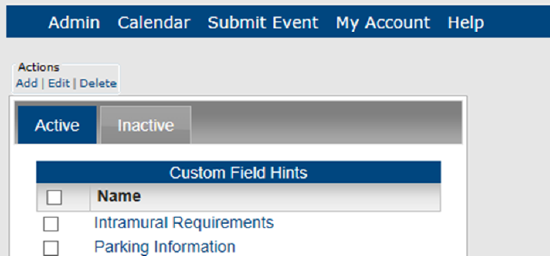
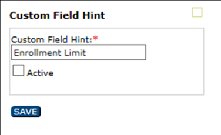

Concept:When you add a custom field hint, you are adding to a global list, which means that any hint that you add can be made available for any event submission form.
A custom field is found on the Submit Event page in EMS Master Calendar. Custom fields supply additional information about events on the calendar for guests or users. As a Master Calendar manager, you can provide hints or suggestions about these fields to the user. For example, if you are managing calendars for a university campus, and one of these calendars is for athletic events, you might add a custom field that indicates where ticket pricing information is available for the event. This topic guides you in creating, activating/de-acitvating, editing, and deleting these custom field hints.
| Concept:When you add a custom field hint, you are adding to a global list, which means that any hint that you add can be made available for any event submission form. |
1. On the Admin menu, point to Configuration > Custom Field Hints. The Custom Field Hints page opens on the Active tab, listing all currently active custom field hints in Master Calendar.

2. To create a new custom field hint, under Actions, click Add. The Custom Field Hint dialog box opens, where you can name the new custom field hint. This name will appear in a dropdown list when a guest or user clicks the Lookup icon next to a Custom field on the Submit Events page.
3. To Edit or Activate/De-Activate a Custom Field Hint (this controls which custom field hints appear to the user), use the Inactive tab to activate field hints, or use the Active tab to de-activate field hints.

4. To Delete a Custom Field Hint, select the field hint you wish to delete on the Active or Inactive tab, and then select one or more custom field hints to be deleted. To select all custom field hints on the currently opened page for deletion in a single step, select Name. If you have multiple pages of hints to delete, you must repeat this entire process on each page.
| Concept:You can delete an active or an inactive custom field hint. If you delete an active custom field hint, any current events that use the hint are not affected. The deletion simply means that going forward, the custom field hint is not available for use. |